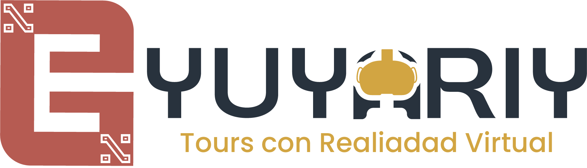

EPG YUYARIY · Tours con VR ℹ️
🏛️ Hitos del City Tour VR
Toca para enfocar y narrar
Zona del Tour
✅ En Perímetro Seguro
Movimiento
🟢 En Ruta Nominal
Búfer Offline
0 ptos
12
Turistas Activos
0
Alertas SOS
1
Rezagados (>10m)
100%
Store&Forward
📋 Registro en Tiempo Real de Turistas (Av. El Sol / Qoricancha)
| Turista | Estado | Última Posición | Batería | Acción |
|---|
🧪 Matriz de Pruebas de Campo (SENATI CNIU-126)
Valida los requisitos funcionales en tiempo real en tu iPhone.
CP-01: Simulación de Cañón Urbano (Offline)
Simula pérdida total de datos 4G al entrar a un callejón colonial.
CP-02: Store & Forward Dispatcher
Fuerza la sincronización inmediata del lote de telemetría retenido.
CP-03: Botón de Pánico en Modo Offline
Genera evento SOS y comprueba persistencia en búfer local.
CP-04: Detección Heurística de Anomalía
Simula inmovilidad estática no programada > 10 minutos.
CP-05: Violación de Geocerca (Ray-Casting)
Teletransporta la posición fuera del polígono seguro del tour.
💾 Búfer Local SQLite / Store & Forward (0 registros)
// Registros encolados en SQLite local...